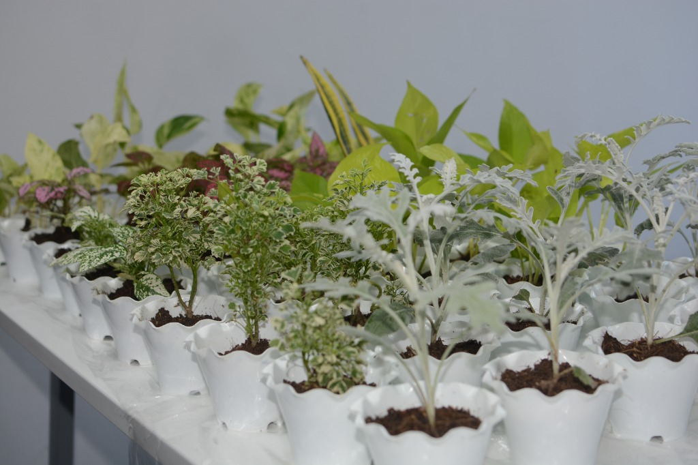
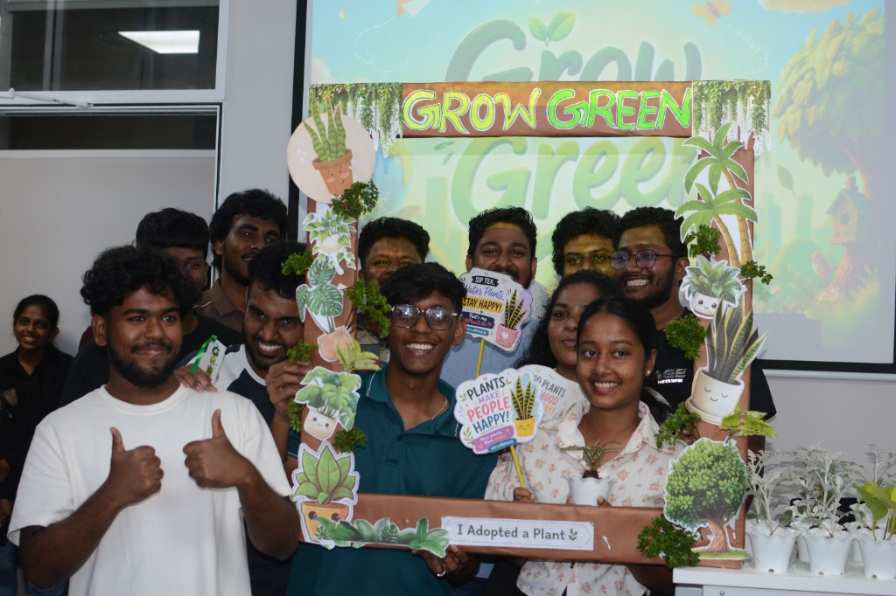
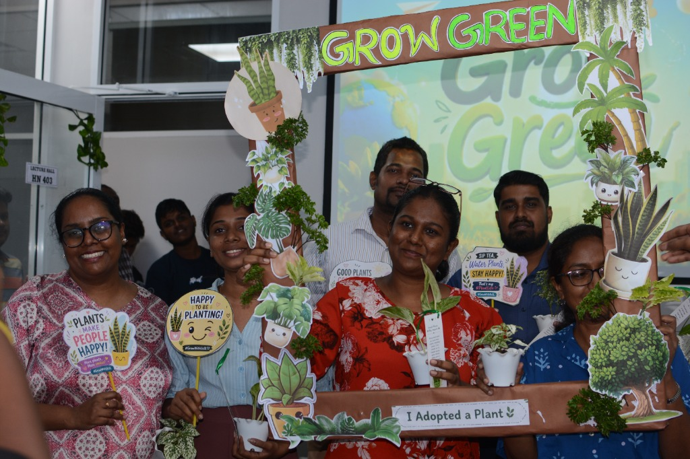

SKILLS PORTFOLIO
A bento-style digital portfolio documenting my professional growth, reflections and evidence across 11 sessions of the Professional Skills module at SLIIT City Uni.
Y.R.
Jayasekara
About Me

Y.R.Jayasekara
HND IT Student · Future Tech Professional
// WHO I AM
I am Y.R.Jayasekara, pursuing an HND in Information Technology at SLIIT City Uni. This portfolio is a comprehensive record of my journey through the Professional Skills module — capturing what happened in each session, how I engaged with the material, and the real impact on my professional development.
The module helped me recognise that becoming a well-rounded IT professional means going beyond technical expertise. Skills like active listening, ethical reasoning, emotional awareness and confident self-presentation are what differentiate good professionals from truly great ones.
Professional Skills Development
A structured module designed to build the workplace competencies that modern IT professionals need — bridging the gap between technical skill and professional excellence.
Lecture Timeline
Sessions Deep Dive
Select a session to explore detailed notes, activities and personal takeaways.
What I Did & Learned
My Growth Map
Development Metrics
Learning Evidence
Click any tile to read the full description.
CSR Initiative
Snake Plant Distribution Programme
Our student group coordinated a CSR event where we raised funds and distributed Snake Plants free of charge to lecturers and fellow students. This initiative created a platform to practise teamwork, budgeting, communication and event coordination — skills directly tied to our Professional Skills learning.




The CSR programme was a powerful reminder that professional skills are not confined to the classroom or office. Organising and participating in this event taught me how to collaborate under real pressure, communicate across different groups, and contribute meaningfully to a community cause. The experience strengthened my commitment to being a socially responsible professional.